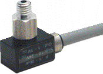
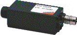
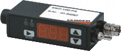
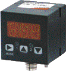

Компоненты для наблюдения за состоянием системы используются во всех областях автоматической транспортировки изделий: в системах подачи в автомобилестроении, пластиковой промышленности, других отраслях для повышения надёжности и производительности. Малогабаритные электронные реле вакуума. Серия SWM Электронные реле вакуума/давления. Серия SWE Реле вакуума/давления для работы в диапазоне от -1 до 10 бар. Электронные реле вакуума/давления с цифровым дисплеем. Серия SWD Реле вакуума/давления для работы в диапазоне от -1 до 0 и от 0 до 10 бар.
Реле вакуума в диапазоне от -1 до 0 бар. Электронные реле вакуума/давления с цифровым дисплеем кубической формы. Серия SWC Реле вакуума/давления для работы в диапазоне от -1 до 0 и от 0 до 10 бар. Выдают два дискретных сигнала. Обладают высокой точностью и просты в использовании.
Компоненты для наблюдения за состоянием системы также используются для управления модулями энергосбережения, что позволяет до предела снизить энергопотребление.
Каждая из этих групп продуктов имеет свои собственные специфические свойства и определяет области применения.
Реле для вакуума глубиной -1 до 0 бар.
Используются в системах, в которых требуются малые размеры элементов.

Выдают два сигнала (аналоговый и дискретный), могут использоваться как датчики глубины вакуума.

Выдают два дискретных сигнала. Обладают высокой точностью и просты в использования.

